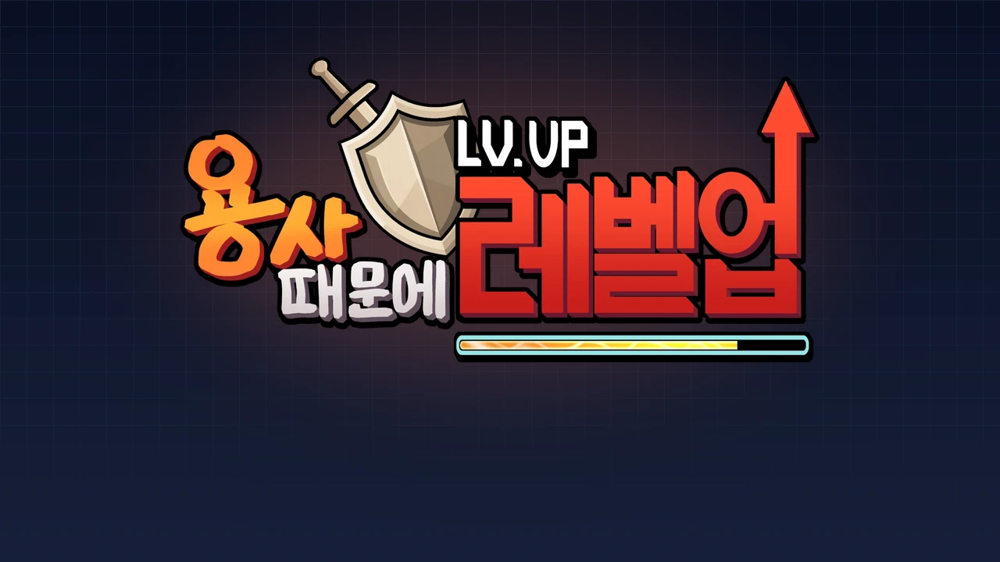

YONGSA LEVEL-UP용사 때문에 레벨업STOVE 출시 2026.11.06
오즈게임랩 2기 5인 팀 프로젝트 · 2026.09.07 ~ 10.16 (6주)
마왕 성장 시스템 · 밸런스 · 인게임 연출/UX · QA (5인 팀)
기획 · 밸런스
- 역(逆) 타워 디펜스(플레이어가 마왕) 성장 축 설계 — 스킬 19종 · 특성 40노드 · 증강 30종 · 시너지 12종, LP/SP 이중 재화
- 밸런스 시트를 소유하고, 시트→에셋 생성기·전투 시뮬레이터·물량 자동 튜너(Python)로 수치 조정 (합성 배율 2성 ×2.1→×1.7, 3성 ×4.5→×3.2)
SYSTEMS
- 스킬(봉인 해제·장착·조준 표시), 마왕 레벨업(XP→LP), 특성 트리, 증강(런 한정·3티어), 시너지(직업 6종+조합 6종)
- 성장 로직을 순수 C# 클래스와 인터페이스(Contracts)로 분리해 팀원 씬 완성 전에 샌드박스에서 먼저 완성, 실전투 통합 시 CombatModifierHub로 연결
UX · 통합
- 튜토리얼, 오프닝 스토리, 로딩 화면, 웨이브 배너, 카메라 자동 구도, 이어하기·난이도 잠금·스테이지 기록·마왕군 해금
- 저장소 기준 내 커밋 102개(머지 제외) · PR 19개 · C# 134파일 약 3만 줄, dev 브랜치 PR·리뷰 기반 협업
PROBLEM SOLVING
- “버프 스킬이 연출만 나옴” — 스킬·유닛 간 문자열 키(AttackSpeed/attackSpeed) 불일치가 원인, 변환 한 곳으로 통일
- “마왕군 강화가 용사에게도 적용” — 보정 허브 키가 직업뿐이라 발생, (직업, 진영) 키로 재설계
- “배너가 결과창과 동시에 뜸” — 팀원의 비동기 진행 코드를 고치지 않고 대기 훅 한 줄씩만 삽입, 배너가 꺼져 있으면 즉시 통과
AI 협업
- Claude Code 활용 — 설계·밸런스·플레이 검증은 직접, 구현·도구 코드는 AI와 분업 (머지 제외 커밋 102개 중 98개에 AI 공동 작성 표기)
Unity 6C#URPNew Input SystemScriptableObjectPythonEditor ScriptingGit·GitHubClaude Code